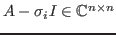
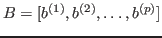
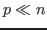
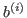
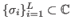

We consider solutions of linear systems with multiple right-hand sides, in which the coefficient matrices differ from each other by a scalar multiple of the identity,

are square nonsingular matrices of large dimension
is a full rank matrix consisting of
given right-hand sides
, and
are called shifts. Many large-scale scientific applications, such as lattice quantum chromo dynamics [1] and PageRank problems [2], to name but a few, require the solution of sequences of linear systems with both multiple shifts and multiple right-hand sides given simultaneously.We propose a new shifted block Krylov subspace algorithm that solves all of the given shifted linear systems simultaneously, and it has the ability to dump the negative effect of small eigenvalues from the convergence. Our block GMRES with deflated restarted for shifted linear systems (BGMRES-DR-Sh) can be seen as an extension of the BGMRES-DR method proposed by Morgan in [3] to the case of shifted linear systems. This approach can be computationally more efficient than applying Krylov subspace methods to the sequence of linear systems with multiple shifts, or block Krylov subspace methods to each single shifted linear system with multiple right-hand sides separately.
The key idea behind BGMRES-DR-Sh is to apply the block GMRES-DR algorithm to the base shifted block system, and then to generate the approximate solutions to the additional shifted block systems by imposing collinearity with the computed base block residual. Moreover, our method is enhanced with a seed selection strategy to handle the case of almost linear dependence of the right-hand sides. After solving the seed block system by the BGMRES-DR-Sh method, a Galerkin projection of the block residual onto the shifted block Krylov subspace generated by the seed block system is considered to obtain approximate solutions for the additional block systems. The whole process is repeated until all of the shifted block systems have converged.
In our talk we present the main lines of development of the BGMRES-DR-Sh method, describing its theoretical properties, and we report on numerical experiments on a set of representative matrix problems having size up to 1.5M unknowns arising from different fields. We analyse various aspects such as performance comparison against other Krylov methods for solving multi-shifted linear systems, the effect of the seed selection strategy, and the sensitivity of our method to the accuracy of the eigen-computation. Finally, we discuss how to combine it with a right preconditioning technique that maintains the block shift-invariance property.